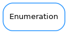

Enumeration¶

-
class
Enumeration(name, enumList, flaggable=False, no_doc=False)[source]¶ Bases:
objectEnumeration class intended to provide the ‘enum’ feature present in many programming languages. The elements of the enumeration can be accessed in an “object member way” or as elements of a dictionary. Usage:
from taurus.core.util.enumeration import Enumeration Volkswagen = Enumeration("Volkswagen", ["JETTA", "RABBIT", "BEETLE", ("THING", 400), "PASSAT", "GOLF", ("CABRIO", 700), "EURO_VAN", "CLASSIC_BEETLE", "CLASSIC_VAN" ])
In the command line:
>>> my_car = Volkswagen.BEETLE >>> homer_car = Volkswagen.PASSAT >>> print Volkswagen.BEETLE 2 >>> print Volkswagen['BEETLE'] 2 >>>print Volkswagen.whatis(homer_car) 'PASSAT'
-
has_key(key)[source]¶ Determines if the enumeration contains the given key :param key: the key :type key: str :return: True if the key is in the enumeration or False otherswise :rtype: bool
-